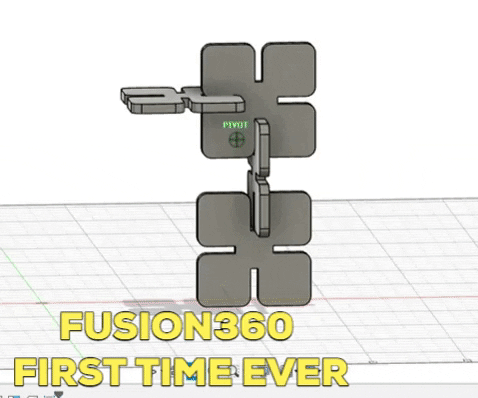

Assignment: Select at least 3 components from the kit. Measure them using calipers, and model them in Fusion 360 (or other program). Create an assembly of these components, and document your work on your webpage.
Today's class focused primarily on laser cutting applications to 2D design and getting aquainted with the Autodesk[link] software Fusion360.
I first tried to watch thisvideo tutorial, but I found it difficult to understand, as the instructor was using too many implicit shortkeys that I don't know yet. I didn't get far at all, so I decided that I would try a different tutorial the next day.
After yesterday's frustration, today I planned to Learn Fusion 360 or Die Trying.
Perfection, no?
"mindful and deliberate with the pallette"
"master sketching before yo go to 3d objects"
"not precise in our sketches
"
Class Exercise
Object 1
Object 2
Object 3